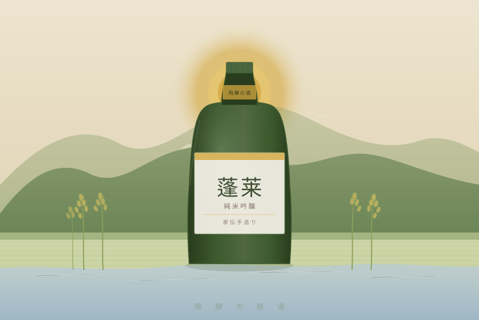

Sake · 日本酒
Hourai — Junmai Ginjo, Kaden Tezukuri
📍 岐阜県 飛騨市古川町 / 渡辺酒造店
北アルプスの清流が育む、飛騨の手造り純米吟醸。
家に伝わる製法を守りながら、
丁寧に手で仕込まれた一本。
なぜ好きか
01
蓬莱を醸す渡辺酒造店は、明治時代から続く飛騨の蔵元。
「家伝手造り」とは単なるキャッチコピーではなく、
代々受け継いできた仕込みの技術と感覚を、機械に頼らず手で守り続けているという宣言だ。
大量生産の酒が当たり前になった今、
こうした姿勢を持ち続ける蔵がいることに、深い敬意を感じる。
この酒を選ぶことは、その文化を支えることでもある。
02
日本酒の味の8割は水で決まると言われる。
飛騨は北アルプスの雪解け水が伏流水となり、
ミネラルバランスが整った清らかな軟水が地下を流れる。
この水と、飛騨の気候で育った米が出会うことで
純米吟醸ならではの、柔らかく透き通った甘みが生まれる。
「地」の力がそのまま味に出ている酒だ。
03
純米吟醸という格付けの酒でありながら、
蓬莱は「食中酒」として非常に優れている。
主張しすぎず、でも存在感がある。
白身魚の刺身、塩でいただく鍋、出汁を使った料理——
本物の調味料で作った料理に、本物の酒が合う。
結びが選ぶ食材と、自然に食卓でつながる一本だ。
04
純米酒とは、米・米麹・水だけで造る酒のこと。
醸造アルコールを添加しない、本来の日本酒の姿だ。
市販の「本醸造」や「普通酒」の多くは醸造アルコールが加えられているが、
純米吟醸はその必要がない。
米の旨みがそのまま溶け込んだ、
結びのコンセプトに最も近い酒の形がここにある。
Product Info
飛騨
From the Heart of the Japanese Alps
北アルプスの清流と、飛騨の大地が育てた米。
代々受け継がれた手造りの技。
一升瓶の中に、その全てが詰まっている。
本物の酒とは、こういうものだと思う。